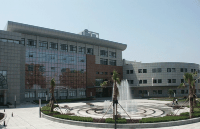

The symposium will be held at the Institute of Hydrobiology, Chinese Academy of Sciences in Wuhan, P. R. China.
The Institute of Hydrobiology (IHB), Chinese Academy of Sciences (CAS) is located at the foot of Luojia Hill and beside the beautiful Donghu Lake in the City of Wuhan. It was founded in 1930 as the Natural History Museum of Academia Sinica, and renamed as Institute of Zoology and Botany of Academia Sinica in 1934. The institute was moved from Shanghai to Wuhan in 1954.

The institute has been mainly devoted to the studies on the life phenomena of aquatic organisms in correlation with their water environments. Four research orientations, including freshwater ecology, aquatic biodiversity and resource conservation, fishery biotechnology and water environment engineering have been advanced. The aims of all these studies are to enhance quality of water environment, and to promote sustainable development of fisheries. The institute is trying to make fundamental, strategic and pioneer contribution for water environment protection, aquaculture model optimization and sustainable utilization of aquatic resources.
There are four research centers in the institute: Center for Aquatic Biodiversity and Resource Conservation, Center for Freshwater Ecology, Center for Fishery Biotechnology and Center for Water Environment Engineering. Moreover, a national key laboratory named "State Key Laboratory of Freshwater Ecology and Biotechnology", a national ecosystem station called "Donghu Lake Ecosystem Experimental Station", and a National Center for Engineering and Technology of Freshwater Aquaculture, supported by Chinese government, have been affiliated to the institute.
The institute has a nice environment and adequate facilities for scientific researchers. Main facilities include the largest Museum of Freshwater Fishes in Asia, the largest Freshwater Algae Culture Collection in China, one modernized Baiji Dolphinarium, and one breeding station for fish and other aquatic organisms.
Shunping He, Institute of Hydrobiology and Chinese Acad. Sci.
Richard L. Mayden, Saint Louis University